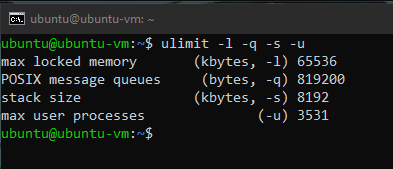

ECE 509 - INTRO TO CYBERSECURITY, SPRING 2021
PROJECT - PHISHING EMAIL WITH MALICIOUS PDF
#################################################
##### SET UP YOUR SYSTEM FOR THIS PROJECT #####
#################################################
HOW TO USE GITHUB
1. Install Git Bash, this is a Linux command prompt
that can be used on Windows machines.
2. Create a directory where you want the project
to be located. (File explorer or command prompt i.e > mkdir ECE509Project)
3. Then right click in the directory, if you have Git Bash
installed properly, you should see 'Open Git Bash here'.
4. In the Git Bash cmd prompt, type:
> git clone https://github.com/lewisk1899/PDFScriptingAttack.git
> cd [directory that was created]
It should start downloading the repo.
5. Now you need to create a 'branch',
this is where all your work will be placed, it is practically
a workstation that you can make changes and everyone can see
and it will not affect anyone elses work.
Type in Git Bash:
> git branch [name]/version_0
> git checkout [name]/version_0
git checkout, just moves you to that branch or version of
the 'main' repo.
6. For everyone to see your work, you will need
to push your branch to the main repo.
> git push -u origin [name]/version_0
-----------------------------------------------------------
Anytime you make a change to the directory, be that you
add files, remove files, edit code, etc. When you
are happy with your changes then you will need to push.
> git add .
(This queues your changes so that it can be pushed)
> git commit -m "[add comment about what u did, be brief]"
> git push
This is 'push' your changes up to your branch, so that
others may see your changes
To make sure that everything is good to go, use
> git status
This is used to see what git sees. Green = good.
#############################################
##### TOOLS THAT ARE GOING TO BE USED #####
#############################################
UbuntuVM
Python
PyPDF2
Node.js
SumatraPDF
pdf-tools
##############################
##### INSTALLING TOOLS #####
##############################
1. Install an Ubuntu VM
Here is a cheatsheet to help out on how to use it: cheatsheet
2. Install Python onto your VM
3. In a UbuntuVM command prompt (if python has been installed)
> pip install PyPDF2
This tool, PyPDF2, can create PDFs and has a function 'addJS()'
which will be discussed later.
4. Install OpenJDK on VM
> sudo apt install default-jre
Needed to view the Java Max Heap
5. Install Node.js on VML
Choose the 'Recommended for most users'
This is used to run a *.js file, for debugging.
5. PDF parsing tool: pdf-tools
This tool helps look into a PDF 'pdf-parser_V0_7_5.zip', on the same page
there is a zip that can allow your to embed a Javascript file into a PDF.
MalwareAnalysis-in-PDF to gain more understanding of the tool.
6. Install SumatraPDF
This is the PDF reader needed, not Adobe (too sophisticated, will be able to detect the attack).
#############################
##### GETTING STARTED #####
#############################
Before opening the malicious PDF, we first need to establish a base and see
what changes will be made.
All of this will be done in the UbuntuVM.
vmstat
Using the command 'vmstat' we are able to see the amount of free memory (free),
memory used as buffer (buff) and cache (cache).
vmstat -s [--stats]
Another way of view the 'vmstat' is using the '-s', displays memory statistics.
free -h
This displays the amount of free and used memory in the system. The '-h' makes it
human readable.
ulimit -l -q -s -u
Determine the user limits of memory. Look at 'ulimit --help' to view the help page.

java -XshowSettings:vm
To view the Java maximum heap size. Needed when running a PDF with a malicious *.js file.